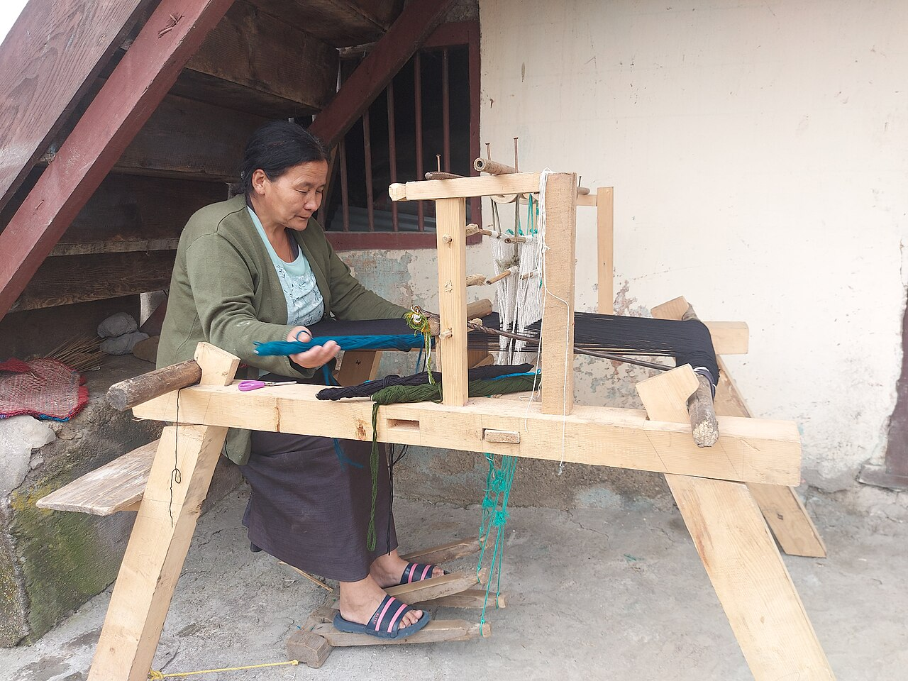
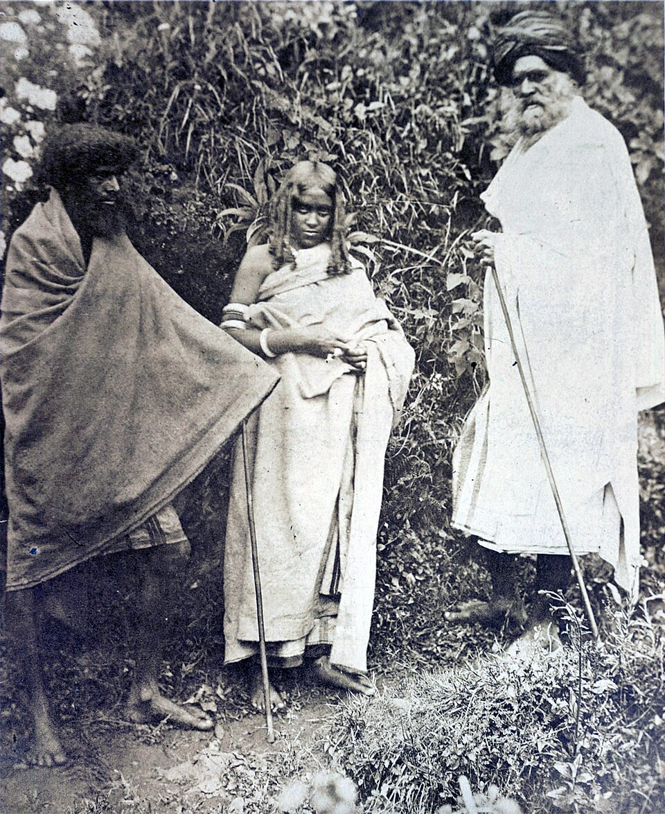

A word or recording
Pronunciation, everyday phrases, songs, and speaker attribution.
Digital Archive · Est. 2026
An archive of India’s underrepresented languages: words, voices, scripts and photographs, shared with community consent.

One word across the archive · documented scripts & spoken heritage
Discover underrepresented scripts, oral narratives, and regional vocabularies linked to real geographies.
Preserve community-cleared books, manuscripts, portraits, and recordings with explicit rights attribution.
Contribute corrections, photographs, and speech records through consent-checked archival moderation.


Community speakers, families, and local educators help keep this archive accurate and accountable.
Pronunciation, everyday phrases, songs, and speaker attribution.
Manuscript plates, craft textiles, places, and portraits with documented consent.
Oral memories, spelling fixes, or source updates on existing entries.
1. Submit 2. Reviewed with the community 3. Published with attribution